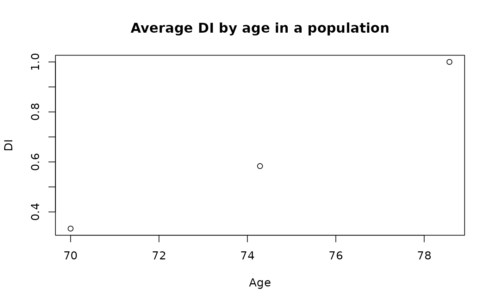

Calls frailty_index() with visible = TRUE; see frailty_index() for arguments, validation, and references.
Usage
plot_frailty_age(
data,
cols = NULL,
invert = NULL,
rescale = TRUE,
age = NULL,
rescale.custom = NULL,
rescale.avoid = NULL,
bins = 7,
na_action = c("ignore", "warn", "error", "keep", "omit"),
na_warn_prop = 0.2,
check_extreme = NULL,
extreme_action = c("warn", "ignore", "error", "cap", "NA"),
return = c("list", "data"),
verbose = FALSE
)Arguments
- data
A data.frame or tibble of health deficits (ideally binary/logical or scaled to \([0,1]\)). Non-binary numeric columns can be rescaled by di::di when rescale = TRUE.
- cols
Character vector of deficit column names to use. If NULL (default), all numeric columns are used except age (if supplied).
- invert
Character vector of column names whose values should be inverted by di::di (e.g., where higher values indicate better health).
- rescale
Logical; if TRUE, non-binary columns will be rescaled to \([0,1]\) by di::di. Default TRUE.
- age
Optional name of the column holding age (used by di for plotting and optional age-binned outputs; excluded from auto-selected cols).
- rescale.custom
Advanced argument passed through to di::di. See di::di documentation for syntax.
- rescale.avoid
Advanced argument passed through to di::di; see di::di documentation for syntax.
- bins
Integer; number of age bins for FI-by-age plots. Default 7.
- na_action
One of:
Legacy: "ignore","warn","error"
HM-CS: "keep","omit" (keep == ignore; omit drops rows with any NA in selected deficits) Default "ignore".
- na_warn_prop
Proportion in \([0,1]\) above which a high-missingness warning is emitted (per column) when na_action = "warn". Default 0.2.
- check_extreme
NULL/TRUE/FALSE gate for out-of-range scan:
NULL (default): legacy behavior (scan only when rescale = FALSE)
TRUE: always scan selected deficits for values < 0 or > 1 before di::di
FALSE: never scan for extremes
- extreme_action
One of "warn","ignore","error","cap","NA" for out-of-range handling when scanning is enabled.
"cap": truncate to \([0,1]\)
"NA": set out-of-range to NA Default "warn".
- return
One of c("list","data"). "list" (default) returns the original di::di result (backward compatible). "data" returns a tibble with one row per individual, columns: di (the frailty index) plus the selected deficit columns (post-capping if applied). Age is included if present.
- verbose
Logical; if TRUE, prints progress and a completion summary. Default FALSE.
Examples
if (requireNamespace("di", quietly = TRUE)) {
df <- data.frame(age = c(70, 75, 80), d1 = c(0, 1, 1),
d2 = c(0.2, 0.8, 1.0), d3 = c(TRUE, FALSE, TRUE))
plot_frailty_age(df, cols = c("d1", "d2", "d3"), age = "age")
}

#> $di
#> [1] 0.3333333 0.5833333 1.0000000
#>
#> $columns
#> d1 d2 d3
#> 1 0 0.00 1
#> 2 1 0.75 0
#> 3 1 1.00 1
#>